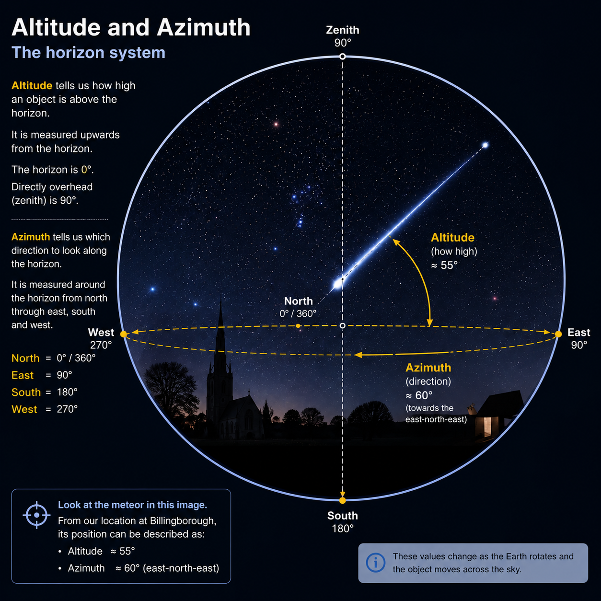

FINDING YOUR WAY AROUND THE SKY
How astronomers describe where things are
The night sky can look like an enormous collection of stars with no obvious way to describe where anything is. Astronomers solve this problem by using coordinate systems that allow the position of an object to be described precisely.
THE SKY FROM WHERE YOU ARE
Altitude and azimuth
One of the simplest ways to describe the position of an object is to use the horizon as a reference. This is known as the altitude-azimuth, or alt-az, system.
Altitude tells us how high an object is above the horizon. The horizon itself is 0°, while an object directly overhead has an altitude of 90°.
Azimuth tells us the direction in which we need to look. It is normally measured around the horizon from north through east, south and west, returning to north at 360°.
For example, an object at an altitude of 30° and an azimuth of 90° would be 30° above the horizon towards the east.

Together, these two measurements give us a simple way of describing where an object appears in the sky from a particular location.
THE SKY IS NOT STATIC
The coordinates change as the sky appears to move
The altitude and azimuth of an object are not fixed. As the Earth rotates, objects appear to move across the sky, so their position relative to the horizon changes.
An object may rise in the east, climb higher into the sky and eventually set in the west. Its altitude and azimuth therefore depend on both the time and the observer's location.
This is particularly important when planning an observation. Knowing that a particular object exists is not enough; we also need to know whether it will actually be above the horizon when we want to observe it.
The horizon system describes the sky as it appears from a particular place at a particular moment.
A USEFUL WAY TO THINK ABOUT THE SKY
The celestial sphere
Astronomers often use the idea of a celestial sphere to describe the sky. It is an imaginary sphere surrounding the Earth onto which the stars and other distant objects can be projected.
The stars are actually at very different distances from us, but their enormous distances make them appear to lie on a vast dome surrounding the observer.
This imaginary sphere gives astronomers a convenient framework for describing positions in the sky without needing to know how far away each object really is.
It gives us a common framework for describing the apparent positions of objects across the sky.
A COORDINATE SYSTEM FOR THE STARS
Right ascension and declination
The horizon system is useful for describing where an object appears in the sky from a particular place and at a particular time. But astronomers also need a way of recording the positions of objects that does not change as the Earth rotates.
For this, astronomers use right ascension and declination. Together, these coordinates provide a standard way of describing positions on the celestial sphere.
Declination is similar to latitude on Earth. It describes how far north or south an object lies relative to the celestial equator. It is measured in degrees, with positive values north of the celestial equator and negative values south.
Right ascension is similar in concept to longitude. Instead of being expressed in degrees, it is normally measured in hours, minutes and seconds, covering 24 hours around the celestial sphere.
Together, they provide a standard reference for locating astronomical objects such as stars, galaxies and nebulae.
FROM BILLINGBOROUGH TO THE NIGHT SKY
Putting coordinates into practice
At Billingborough Observatory, coordinates provide a practical connection between an astronomical object and what we can actually see from Lincolnshire.
An object's right ascension and declination can be used to identify it on an astronomical chart or catalogue. From those coordinates, software can determine where the object should appear in the sky at a particular time and location.
The resulting altitude and azimuth tell an observer where to point the telescope or camera.
This is one reason astronomical coordinates are so useful: they turn the apparently complicated arrangement of the night sky into something that can be measured, calculated and reproduced.
A catalogue can tell us where an object is on the celestial sphere. The observer's location and the time determine where that object appears in the actual sky.
OBSERVE • LOCATE • UNDERSTAND
Knowing where to look
Once we can describe positions in the sky, the night becomes easier to navigate. Coordinates allow observations to be planned, objects to be located and measurements made at Billingborough to be compared with observations made elsewhere.